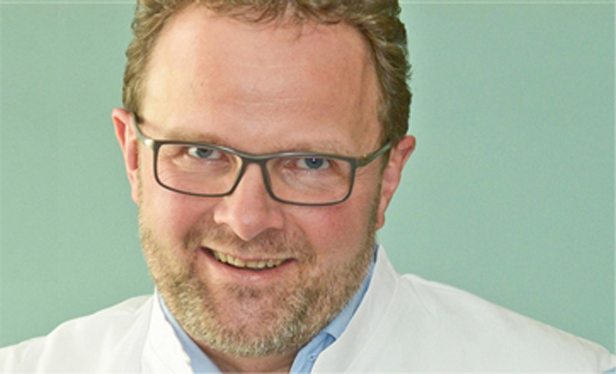
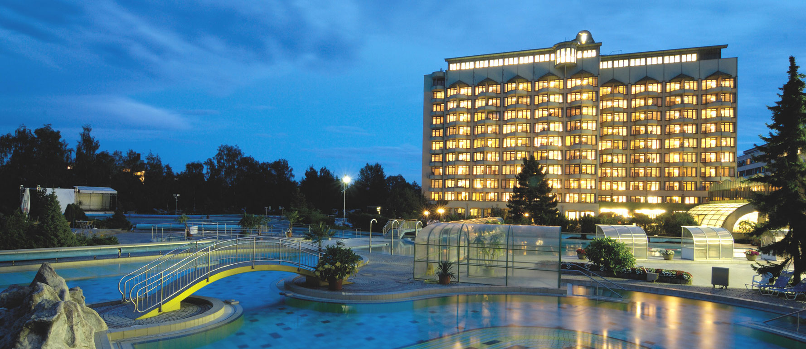
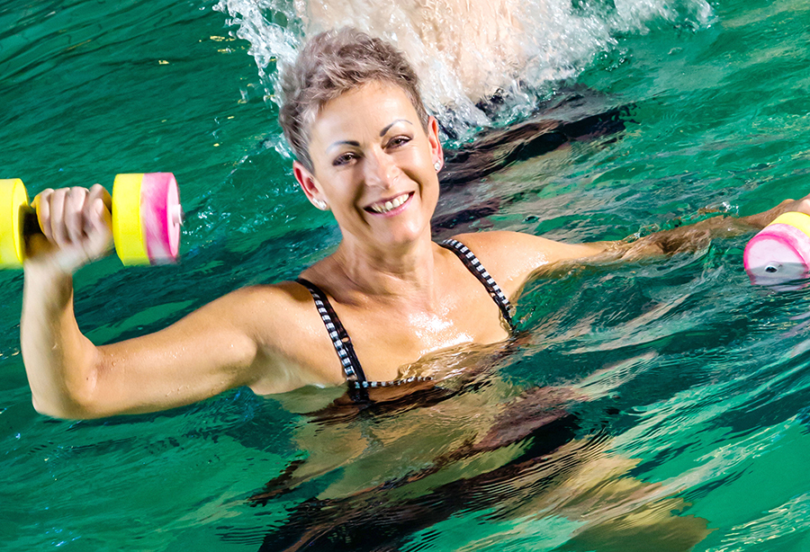
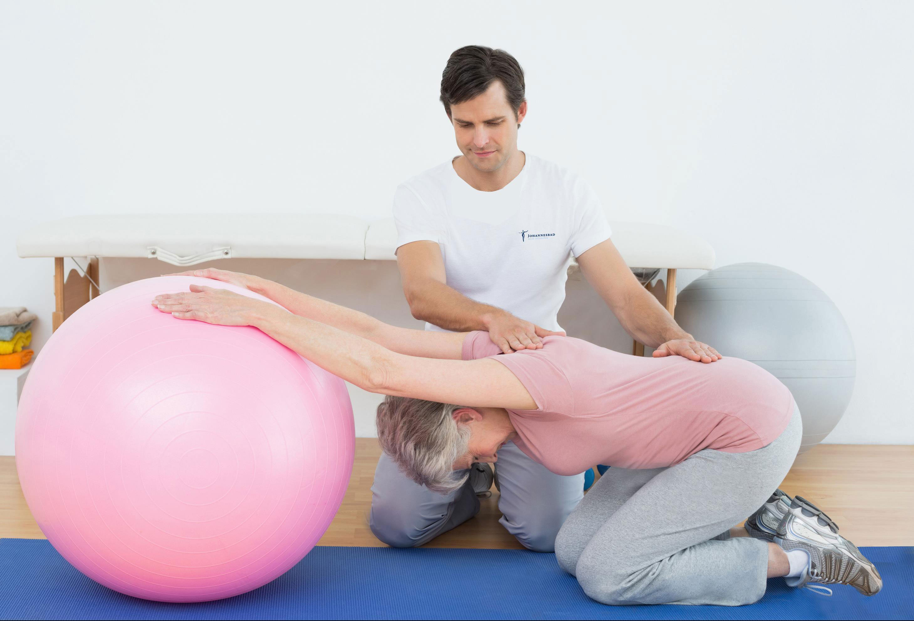
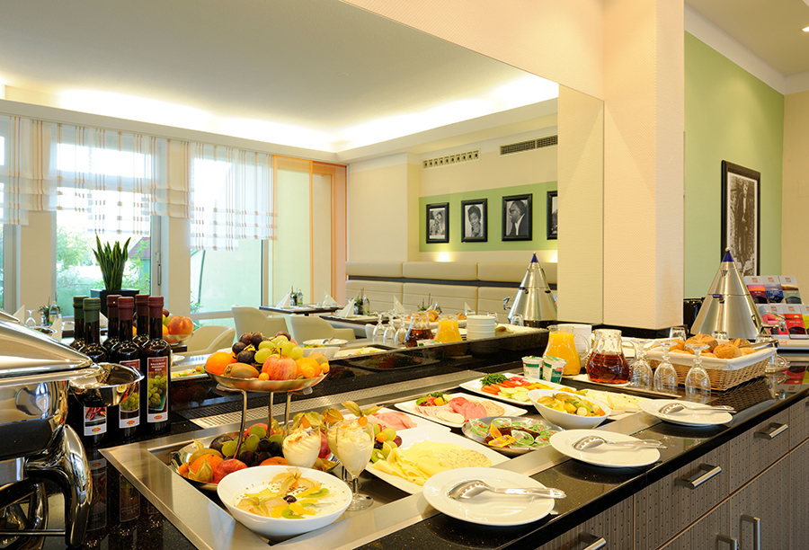

Подарить родителям здоровье -
Хороший способ выразить свою заботу о них
Восстановительное лечение для ваших родителей в лечебном санатории Германии Johannesbad Fachklinik
- Ваши родители получат максимальную пользу от лечения: в результате обследования командой специалистов разрабатывается индивидуальная лечебная программа.
- Здоровье ваших родителей гарантированно улучшится после лечения у нас: опыт работы более 50 лет совместно с немецким качеством лечения.
- Сэкономьте ваши деньги: только для наших подписчиков мы предлагаем услуги квалифицированного медицинского переводчика на все время лечения совершенно бесплатно.
Несколько слов от наших пациентов:
"Надеюсь, когда-нибудь еще сюда приехать".
Елена, 69 лет
В моем возрасте обычно все уже болит: спина, суставы, ноги. Я, конечно, рассказывала об этом своим детям, когда они приезжали, но не думала, что они что-то предпримут. Ну знаете, как это бывает, просто рассказываешь о делах, о здоровье? А они, представляете, посовещались и сделали мне подарок на день рождения: 2х-недельный восстановительный курс в клинике Йоханнесбад в Баварии. Я так удивилась, обрадовалась и испугалась одновременно... Я так боялась лететь одна и переживала, как я там пойму что-нибудь, я ведь не говорю по-немецки. Но в течение всего пребывания меня сопровождала очень милая девушка-переводчик, и еще там были другие русские пациенты, очень многие из персонала тоже говорили по-русски - иммигранты. Мы даже подружились с одной посетительницей и до сих пор переписываемся. До тех пор я всегда смеялась над фразой "заново родиться", но это были чудесные дни. Немецкие врачи очень внимательные и всегда готовы отвечать на вопросы. Меня буквально окружили комфортом и заботой, всевозможными массажами, терапией, купанием в минеральных источниках. Отель был просто замечательный, ресторан тоже высший класс. Там даже музыкальные вечера были. Надо ли говорить, я вернулась домой на десяток лет моложе! Я так рада, что мои сыновья такое придумали. Надеюсь, когда-нибудь еще сюад приехать.
Несколько слов от наших врачей:
Пожилые люди нуждаются не только в лечение, но и в заботе. Мой многолетний опыт в спортивной травматологии и хирургии помогает мне точно диагностировать источник болей и проблем, а слаженная команда - услышать пациента. Только так можно достичь успеха в лечении!
ВЕДУЩИЙ ВРАЧ ОРТОПЕДИЧЕСКОГО ОТДЕЛЕНИЯ
Доктор мед. АСТРИД КРЮКХАНС

Наши русские пациенты часто шутят, что мы очень педантичны и внимательны к деталям. Это, наверное, немецкое качество, но в лечении и восстановлении оно играет очень важную роль. Ведь внимание к пациентам и их проблемам - залог выздоровления. Девиз нашей клиники "Ваше здоровье - наша жизнь" показывает во многом наше отношение к работе.
ГЛАВНЫЙ ВРАЧ ЦЕНТРА ЛЕЧЕНИЯ СПИНЫ И БОЛЕВОГО СИНДРОМА
Доктор мед. ОЛИВЕР ВОЛЬФ
Ваше здоровье - это наша жизнь




Свяжитесь с нами
8 (800) 201 18 72
lechenie@johannesbad.com
All rights reserved® Johannesbad Fachklinik
Johannesstraße 2, Bad Füssing D-94072, Deutschland
Наши реквизитыПравовая информация